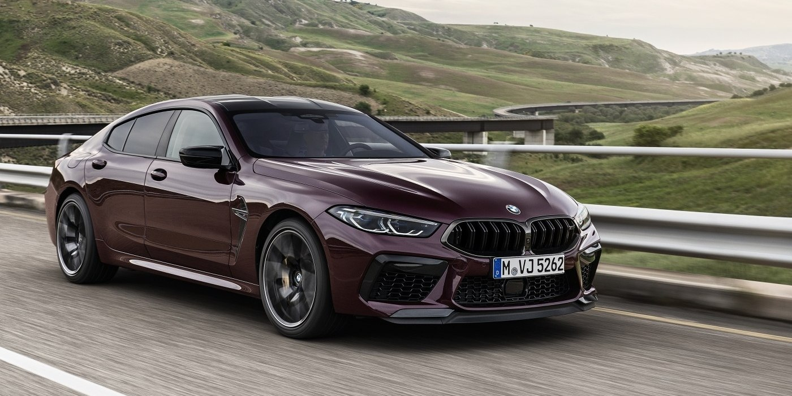

BMW M8 Gran Coupe(БМВ М8 Гран Купе)
BMW M8 Gran Coupe (БМВ М8 Гран Купе) - седан класса «F1» с полным приводом. Дебют «заряженной» версии модели состоялся в октябре 2019 года. Спустя три месяца после дебюта «заряженных» версий купе и кабриолета, баварцы представили завершающую модель 8-Серии - M8 Gran Coupe. Гран Купе, как и «короткие восьмерки», обзавелась более агрессивным бампером с крупными воздухозаборниками, увеличенными боковыми «жабрами», раздутыми колесными арками, иными зеркалами, двухствольным выхлопом, спойлером на крышке багажника, карбоновым верхом (доступен как опция и для гражданской версии) и базовыми 20-дюймовыми дисками с разноширокими покрышками. Теперь только настоящий ценитель BMW сможет отличить интерьер М8-й от и ее простой версии 840i в М-пакете. Первую выдает лишь красная кнопка запуска, особый джойстик АКП, шильдик на центральной консоли и две красные кнопки расположенные на рулевом колесе (М1 и М2 для быстрой активации сохраненных режимов). По технике без сюрпризов: 4,4-литровый V8 (S63) с двумя турбинами, 8-ступенчатый гидротрансформатор ZF, продвинутый полный привод M xDrive (может полностью отключить муфту передней оси), активный задний дифференциал и адаптивное шасси. При этом немцы, по недавно принятой традиции, представили сразу две версии: M8 Gran Coupe и M8 Competition Gran Coupe. В первом исполнении автомобиль выдает 600 л.с. и 750 Нм, в то время как во втором, аналогичный двигатель форсирован до 625 л.с. (момент остался неизменным). Правда одной «прошивкой» дело не обошлось. Версия Competition получила еще более жесткие опоры двигателя, и более «злой» выхлоп с облегченными впридачу дисками. Напомним, что в основе седана лежит растянутая на 200 мм «тележка» купе, известная в BMW как платформа CLAR. Однако у «Эмки» есть ряд особенностей, а именно: усиленный дополнительными растяжками кузов и Х-образная вставка под днищем. Динамические показатели: 0-100 - 3,3 сек (3,2 сек Competition), 0-200 - 11,2 сек (11 сек Competition). Максимальная скорость - 250 км/ч (ограничена электроникой). Однако, за доплату, скоростной «ошейник» можно сдвинуть до отметки в 305 км/ч
